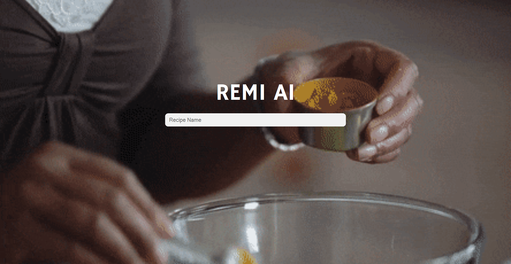
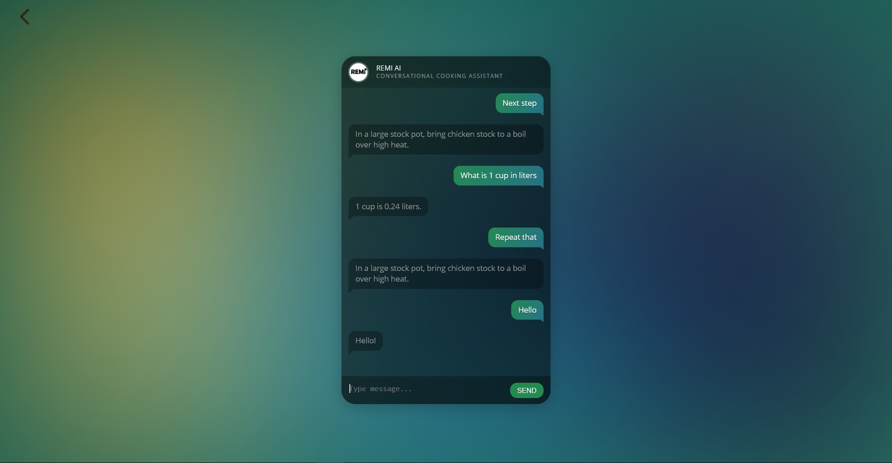

Personal Projects
-
Voice-Enabled Kitchen Helper
Anyone who cooks will realize how useful it is to have another individual helping you out. Sometimes you forget the recipe steps, sometimes you need alternative ingredients, or perhaps you need to convert between units. This project can be thought of as a specialized version of Alexa/OK Google with respect to culinary preparation. It provides a chat interface to common kitchen functionalities such as recipe walkthroughs, ingredient substitutions, unit conversions and even timers! I am the main developer for this project having handled the backend (A Python Flask application) that's currently hosted on Heroku and the frontend (A desktop app built with Python, HTML, CSS and Javascript). Here are some screengrabs of the homepage and the conversation page.
  -
Version Control App for the Everyday Person
A Python application that exposes the most useful functions in version control with a simple, colorful GUI abstraction to the everyday user. It has four buttons: “select directory, add checkpoint, view a checkpoint and view the latest checkpoint”. Everyone can enjoy version control without having ever heard the word “Git”.
-
Natural Language Diagnosis Software
Link to Repository
An advanced extension on the image recognition diagnosis app mentioned in number three. A user can input a description of a disease in natural text and the system will provide a list of top matching diseases. The underlying concept that drives this system is a boosting algorithm and the data used to train the system was collected using a web crawler. The system also has a novel query expansion mechanism that attempts to produce different re-expressions of a query such that the query does not necessarily need to have words that match a relevant disease’s description in our database.
-
Image Recognition Diagnosis App
Link to Repository
A mobile application that diagnoses visible illnesses using image recognition. The user uploads a capture of their condition and the mobile app provides a diagnosis based on a trained model. A rudimentary version can that diagnoses chicken pox and sunburns can be viewed here at:
-
Bus Tracker Alarm
Link to Repository
One of the most common problems students face on campus is catching the bus. You might arrive at the bus stop only to find that you need to wait twenty minutes for the next bus. You might miss the bus just as you arrive at the bus stop and you end up having to wait in the cold. There is a great deal of wasted time and unnecessary discomfort from being exposed to harsh weathers. With this software just input your bus route of interest and your stop of interest and it will let you know when your bus is x minutes away from your stop of interest. That way, you can focus on work safely indoors with minimal time wastage.
-
Open Source Social Media Style Client App
Link to Repository
An open source client-side Android application that comes packaged with a news feed page, profile page and comments page designed to deal with Android’s steep learning curve. This application leverages some of the latest Android technologies around and is designed with as much of the industry-level standards of Android application programming I picked up over my internship such as:
- Complete Kotlin coverage in codebase
- MVP and MVVM Architecture Pattern
- RxKotlin and RxJava
- Android Data Binding
- Dependency Injection